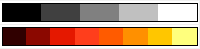

Farbmanager
Color-Manager
Origin enthält ein Hilfsmittel mit dem Namen Farbmanager, um in Origin verwendete Farblisten und Paletten benutzerdefiniert anzupassen.
- Sie können festlegen, welche Farblisten und Paletten von Origin auf der Bedienoberfläche gezeigt werden.
- Sie können die Farblisten und Paletten aus dem Internet oder aus Dateien importieren.
- Sie können eine neue Farbliste und Palette entsprechend Ihrer benutzerdefinierten Anpassung erstellen.
Um den Dialog Farbmanager zu öffnen:
- Klicken Sie auf Einstellungen: Farbmanager oder drücken Sie STRG + SHIFT + O.
Verfügbare Farblisten und Paletten
Im linken Bedienfeld des Farbmanagers werden alle verfügbaren Farblisten / Paletten aufgelistet. Hinweis: Diese Farblisten / Paletten werden nicht alle auf der Bedienoberfläche von Origin gezeigt.
Klicken Sie auf die Zelle Name der Farblisten / Paletten und benennen Sie sie dann ggf. um. Klicken Sie auf die Auswahlliste Kategorie. Sie können für sie die Kategorien Undefiniert / Sequenziell / Divergierend / Qualitativ festlegen.
Klicken Sie auf den Header des Namens oder der Kategorie, um diese Liste nach Name oder Kategorie zu ordnen.
Farblisten oder Paletten auf der Bedienoberfläche zeigen
Im rechten Bedienfeld des Farbmanagers werden die Farblisten / Paletten aufgeführt, die Sie auf der Bedienoberfläche zum benutzerdefinierten Anpassen von Farben auswählen können.
Eine Farbliste / Palette zur aktuellen Bedienoberfläche hinzufügen
- Wählen Sie eine verfügbare Farbliste / Palette im linken Bedienfeld aus. (Sie können die Tasten Shift' oder Strg verwenden, um mehrere Farblisten / Paletten auszuwählen.)
- Klicken Sie auf die Schaltfläche , um die ausgewählten Farblisten / Paletten zum rechten Bedienfeld hinzuzufügen.
Farbliste(n) / Palette(n) aus der Bedienoberfläche entfernen
- Markieren Sie die Farbliste(n) / Palette(n) in der Liste Für Bedienoberfläche ausgewählt.
- Klicken Sie dann auf die Schaltfläche
 , um sie zu entfernen.
, um sie zu entfernen.
Auf der Bedienoberfläche gezeigt Farblisten oder Paletten ordnen
- Klicken Sie auf die gewünschte Farbliste / Palette.
- Verwenden Sie die Schaltflächen
 und
und  , um die Reihenfolge neu zu ordnen.
, um die Reihenfolge neu zu ordnen.
Eine Farbliste oder Palette bearbeiten
- Klicken Sie mit der rechten Maustaste auf eine Farbliste oder Palette und wählen Sie Farbe bearbeiten.
- Um Standardlisten oder -paletten zu bearbeiten, können Sie sie zuerst duplizieren. Das Duplikat kann bearbeitet werden.
- Farblisten und Paletten werden mit Hilfe des Dialogs Farben erzeugen bearbeitet.
Eine Farbliste oder Palette löschen
- Klicken Sie im linken Bedienfeld auf die benutzerdefinierte Liste oder Palette und wählen Sie Löschen.
Farblisten oder Paletten importieren
Origin unterstützt den Import von Farblisten oder Paletten von Webseiten oder aus lokalen Dateien. Wenn die neue Farbliste oder Palette importiert ist, wird sie wohl in der Liste Verfügbar als auch unter Für Bedienoberfläche ausgewählt aufgeführt.
Beachten Sie, dass jede importierte Palette von weniger als 20 Farben als eine Farbliste (.oth) anstatt als eine Palette (.pal) gespeichert wird. Sie können dieses Verhalten durch Ändern des Werts der Systemvariable @MPS modifizieren.
Aus Web importieren
Klicken Sie auf diese Schaltfläche. Ein Dialog zum Eingeben der URL für eine Farbliste oder Palette auf einer Webseite wird angezeigt.
Origin stellt einige URL-Beispiele in der Auswahlliste zur Verfügung, die Sie zum Importieren der Farblisten oder Paletten auswählen können.
Aus Dateien importieren
Klicken Sie auf diese Schaltfläche. Sie können die lokale Datei der Farbliste / Palette auf Ihrem Rechner auswählen.
Sie können diese Dateiformate importieren: Scribus (.xml), CorelDraw und Corel PhotoPaint (.xml), Office Color Table (.soc), Adobe Color (.aco), Adobe Color Table (.act), Adobe Swatch Exchange (.ase), JASC PaintShopPro (.pal) und GNUPlot Palette (.pal).
 |
Mit Ausnahme der XML-Formate können diese Palettendateien auch durch Drag&Drop hinzugefügt werden.
|
Neue Farbliste oder Palette hinzufügen
Klicken Sie auf die Schaltfläche Neu, um diesen Dialog Farbe erzeugen zu öffnen. In diesem Dialog können Sie die Farbliste nach Bedarf benutzerdefiniert anpassen.
Farbliste
Im linken Bedienfeld wird die Farbliste mit Hex-Farbcode gezeigt.

Farbe hinzufügen, einfügen oder löschen
- Klicken Sie auf die Schaltfläche oder klicken Sie mit der rechten Maustaste auf die Farbliste und wählen Sie Hinzufügen, um ein Farbelement unten in der Farbliste hinzuzufügen. Legen Sie eine Farbe mit Hilfe der verschiedenen Bedienelemente für Farben fest (einschließlich der Pipette) und klicken Sie auf Ersetzen.
- Um eine Farbe einzufügen, markieren Sie eine Listenfarbe und klicken Sie auf Einfügen, um das aktuelle Farbelement oberhalb der markierten Farbe einzufügen. Verwenden Sie eine Kombination der Farbbedienelemente (einschließlich der Pipette), um einen neue Farbe zu erstellen. Klicken Sie dann auf Ersetzen.
- Klicken Sie auf die Schaltfläche
 oder klicken Sie mit rechten Maustaste auf eine Farbe und wählen Sie Löschen, um die markierte Farbe zu entfernen.
oder klicken Sie mit rechten Maustaste auf eine Farbe und wählen Sie Löschen, um die markierte Farbe zu entfernen.
Farbliste neu anordnen
- Klicken Sie auf die Schaltfläche Spiegeln , um die Farbliste umzukehren.
- Klicken Sie auf Nach oben verschieben oder Nach unten verschieben , um die markierte Farbe um eine Position in der Liste zu verschieben.
- Klicken Sie auf die Schaltfläche Nach oben verschieben
 , um die markierte Farbe an die erste Stelle in der Liste zu verschieben; klicken Sie auf die Schaltfläche Nach unten vrschieben , um die markierte Farbe an die letzte Stelle in der Liste zu verschieben.
, um die markierte Farbe an die erste Stelle in der Liste zu verschieben; klicken Sie auf die Schaltfläche Nach unten vrschieben , um die markierte Farbe an die letzte Stelle in der Liste zu verschieben.
- Sie können die Listenzahlen auch ziehen, um die Reihenfolge der Farbliste neu zu ordnen.
Inkrementliste oder Palette laden
Klicken Sie mit der rechten Maustaste auf die Farbliste und wählen Sie Inkrementliste oder Palette laden, um eine Inkrementliste oder Palette zu laden. Danach können Sie diese Farbliste modifizieren und sie als eine neue Liste speichern.
Farben definieren
Verwenden Sie das mittlere Bedienfeld, um eine Farbe zu definieren und sie zur Farbliste hinzuzufügen.
Sie können Farben mit drei verschiedenen Methoden definieren:
- Verwenden Sie das Fadenkreuz und den Schieber, um eine Farbe auszuwählen.
- Klicken Sie auf die Pipette und dann auf die gewünschte Farbe in einem anderen Teil des Arbeitsbereichs.
- Geben Sie den Wert für RGB, HSL oder HEX der Farbe in den Bearbeitungsfeldern ein.
- Um eine Listenfarbe zu ersetzen, definieren Sie die Farbe, wählen Sie die zu ersetzende Listenfarbe aus und klicken Sie dann auf Ersetzen.
- Um eine neue Farbe an die Liste anzuhängen, definieren Sie die Farbe und klicken Sie auf Als neu hinzufügen.
- Klicken Sie auf Umbenennen, um die ausgewählte Listenfarbe in den Umbenennungsmodus zu versetzen, in dem Sie auf den Hex-Farbcode neben dem Farbblock klicken und Ihrer Farbe einen Namen geben (beachten Sie, dass Systemfarben -- z. B. "Rot" -- nicht umbenannt werden können).
Interpolation
Klicken Sie auf die Schaltfläche Interpolieren im rechten Bedienfeld. Sie können im Popup-Dialog die Option Nach Gruppe interpolieren wählen und den Interpolationstyp und die Anzahl der zu interpolierenden Farben festlegen.
- Verwenden Sie diesen Dialog, um beide Paletten und Farblisten zu erzeugen.
- Paletten und Farblisten können sogar aus nur 2 Farben interpoliert werden.
- Verwenden Sie Nach Gruppe interpolieren, um eine Farbliste/Palette zu erweitern (Gruppenmitglieder < Anz. der Farben für jede Gruppe, um eine Farbliste/Palette zu reduzieren (Gruppenmitglieder < Anz. der Farben für jede Gruppe).
Nach Gruppe interpolieren
Nach Gruppe interpolieren: Wenn aktiviert, werden zwei Bearbeitungsfelder hinzugefügt:
- Das Gruppenmitglied legt die Anzahl der in der vorhandenen Farbabfolge zu gruppierenden Farbblöcke fest (es werden mindestens zwei Blöcke für eine "Gruppe" benötigt).
- Anzahl der Farben für jede Gruppe legt die Anzahl der interpolierten Farben fest, die sich aus jeder "Gruppe" ergeben sollte.
Interpolationstyp
Sie können diese vier Interpolationstypen wählen.
- Linear
- Spline
- B-Spline
- Akima-Spline
Weitere Informationen zu dem Algorithmus von jeder Interpolationsmethode finden Sie unter der X-Funktion interp1xy.
| Anwenden |
Eine Vorschau wird erzeugt. |
| OK |
Sie akzeptieren die Vorschau, schließen den Dialog und fügen die Farbliste/Palette zum Farbmanager hinzu. |
| Abbrechen |
Die Vorschau wird verworfen, der Dialog der Interpolation wird geschlossen und Sie kehren zur ursprünglichen Liste zurück. |
Name und Kategorie festlegen
Das untere Bearbeitungsfeld Name wird zum Anpassen des Namens für die benutzerdefinierte Farbliste verwendet.
Category
- Sequenziell: Die Farben in dieser Art von Farbliste wechseln allmählich zwischen zwei Hauptfarben. Diese Änderung bezieht sich auf einen Farbton.
- 
- Divergierend: Die Farben in dieser Art von Farbliste wechseln allmählich zwischen drei Hauptfarben. Diese Änderung bezieht sich auf mehrere Farbtöne.
- Qualitativ: Die Farben in dieser Art von Farbliste wechseln nicht allmählich nach Hauptfarbe.
- Undefiniert: Wenn die Farbliste keiner der obigen drei Situationen entspricht, können Sie sie auf Undefiniert setzen.
Existierende Farblisten/Paletten zusammenfügen
Sie können existierende Farblisten/Paletten zusammenfügen. Beachten Sie, dass die Gesamtanzahl der Farben in den zusammenzufügenden Listen/Paletten 256 nicht überschreiten kann (d. h., Farbe zusammenfügen ist nicht verfügbar).
- Wählen Sie im Farbmanager zwei oder mehr Farblisten/Paletten.
- Klicken Sie mit der rechten Maustaste und wählen Sie Farbe zusammenfügen.
|
Da die Anzahl der Farben insgesamt 256 nicht überschreiten darf, müssen Sie eventuell die Anzahl der Farben in den vorhandenen Listen/Paletten reduzieren, bevor Farbe zusammenfügen verfügbar wird. Verwenden Sie die Option Nach Gruppe interpolieren, um Farben in existierenden Listen/Platten systematisch zu reduzieren, so dass Sie sie zusammenfügen können.
|
Standarddiagrammfarbe festlegen
Die Option ist nur verfügbar, wenn Farblisten aktiviert ist. Klicken Sie auf diese Schaltfläche, um die Systeminkrementliste des Dialogs Designs verwalten zu öffnen.